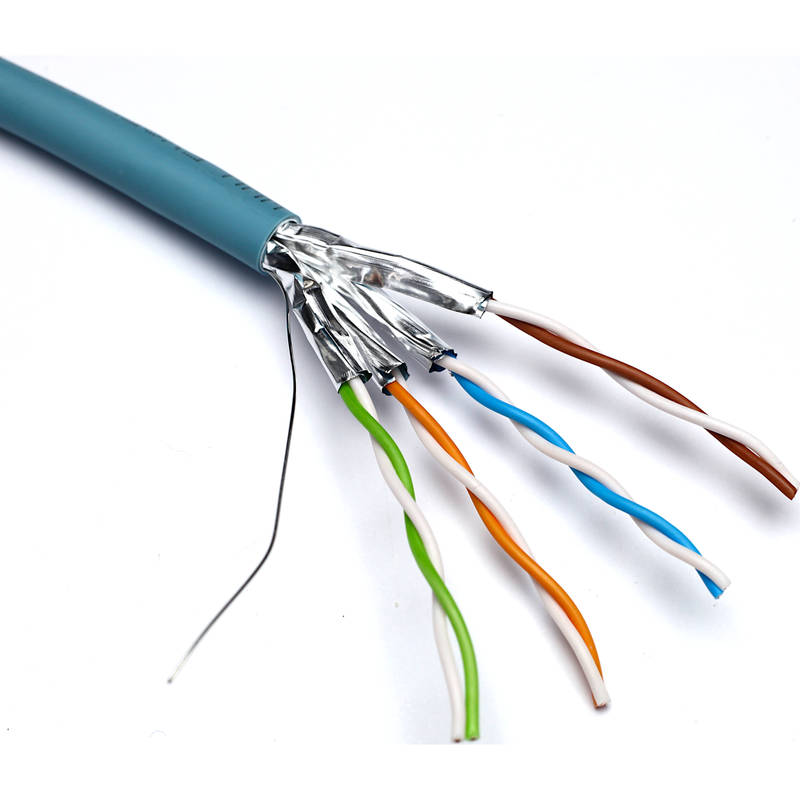
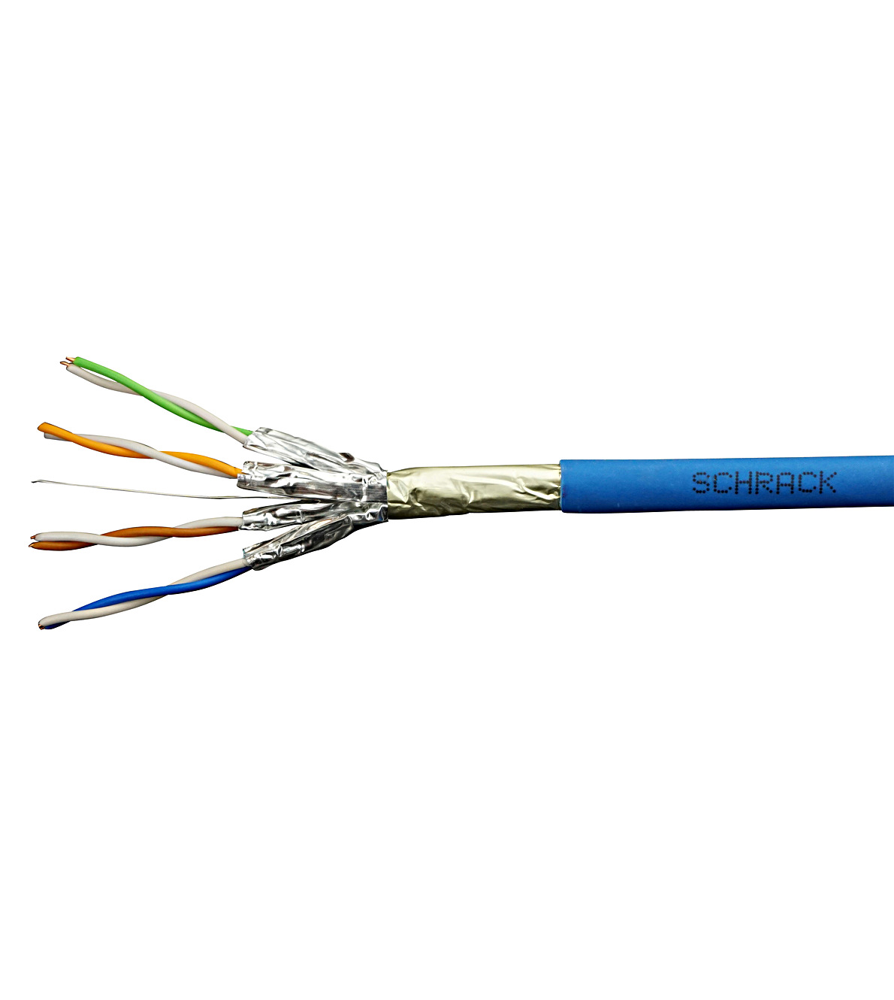
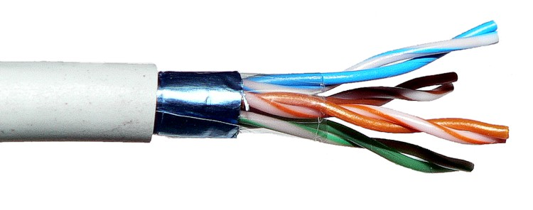

Descripción Técnica de Componentes de Red y Cableado Estructurado
Componentes Pasivos de Red
-
Patch Panel:
Un patch panel es un dispositivo que agrupa múltiples conexiones de red en un solo punto de administración. Facilita la organización y la reconfiguración de las conexiones de red.
-
Conectores RJ45:
Los conectores RJ45 son utilizados para conectar cables de red a equipos y dispositivos. Son esenciales para establecer conexiones Ethernet.
-
Tomacorrientes de Red:
Los tomacorrientes de red son puntos de conexión en las paredes que permiten la conexión de cables de red a dispositivos. Facilitan la conectividad en diferentes ubicaciones.
Componentes Activos de Red
-
Router:
Un router dirige el tráfico de datos entre diferentes redes, como una red local y la Internet. Se encarga de asignar direcciones IP y manejar el enrutamiento de paquetes.
-
Switch:
Un switch conecta varios dispositivos dentro de una misma red, permitiendo la comunicación entre ellos. Trabaja en el nivel 2 del modelo OSI y realiza switching de paquetes de datos.
-
Access Point (Punto de Acceso):
Un punto de acceso permite a los dispositivos inalámbricos conectarse a una red cableada mediante Wi-Fi. Extiende la cobertura de la red.
-
Firewall:
Un firewall es un dispositivo de seguridad que filtra el tráfico de red para proteger contra accesos no autorizados y amenazas externas.
Herramientas para Cableado Estructurado
-
Crimpadora:
Herramienta utilizada para insertar conectores RJ45 en los extremos de los cables de red. Asegura una conexión adecuada y segura.
-
Tester de Red:
Dispositivo que verifica la integridad y la correcta instalación de los cables de red, asegurando que no haya fallos en la conexión.
-
Cortadora de Cables:
Herramienta utilizada para cortar cables a medida. Permite preparar cables para la instalación.
-
Peladora de Cables:
Dispositivo que retira el aislamiento de los cables de red sin dañar los conductores internos, preparándolos para la conexión.
Cableado Horizontal y Vertical
Cableado Horizontal: Se refiere a la instalación de cables de red desde el panel de parcheo hasta las tomas de red en cada oficina o área de trabajo. Generalmente cubre distancias de hasta 90 metros.
Cableado Vertical: También conocido como cableado de backbone, conecta diferentes pisos o áreas dentro de un edificio a través de cables de red. Maneja conexiones entre diferentes partes de la infraestructura de red.
Tipos de Cables para Cableado Horizontal
-
Cable U/FTP (Unshielded Foiled Twisted Pair):
Cable de par trenzado sin apantallamiento general pero con apantallamiento individual para cada par. Adecuado para distancias cortas en entornos con baja interferencia.

-
Cable F/UTP (Foiled Unshielded Twisted Pair):
Cable con apantallamiento global, lo que ayuda a reducir la interferencia electromagnética. Ideal para entornos con niveles altos de interferencia.

-
Cable STP (Shielded Twisted Pair):
Cable de par trenzado con apantallamiento para cada par y para el cable completo. Ofrece una protección superior contra interferencias externas.

Normativa para Cables de Red
Clase A: Según la normativa, los cables clase A deben cumplir con ciertos requisitos de rendimiento y calidad, como la atenuación y la diafonía. Estas normativas garantizan la integridad y la fiabilidad de la conexión de red.
Clase B: Los cables clase B tienen especificaciones de rendimiento ligeramente diferentes a las clase A, con requisitos específicos para la transmisión de datos en redes de alta velocidad.
Uso de Cables en la Red
Cable Directo: Se utiliza para conectar dispositivos de red a través de un switch o hub, como conectar un ordenador a un switch. La configuración de pines es la misma en ambos extremos del cable.
Cable Cruzado: Se utiliza para conectar directamente dos dispositivos de red entre sí, como conectar dos ordenadores sin pasar por un switch. La configuración de pines es diferente en cada extremo del cable.